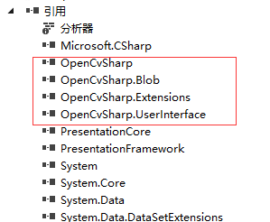
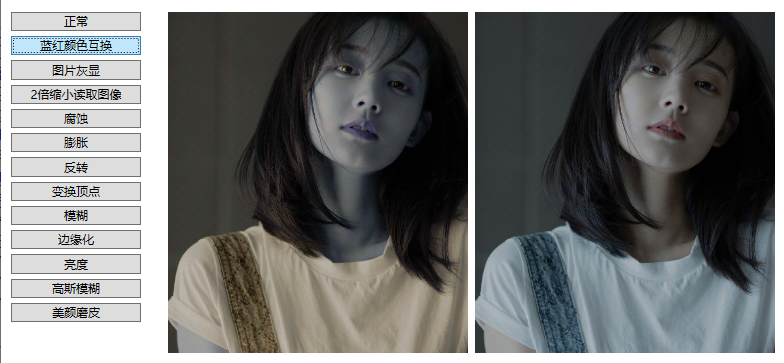
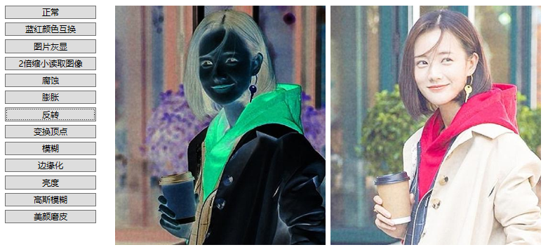
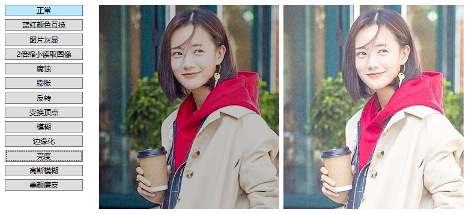
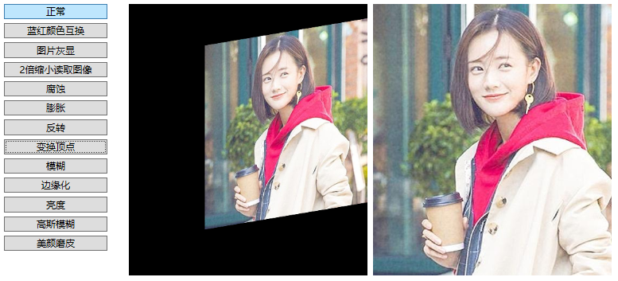
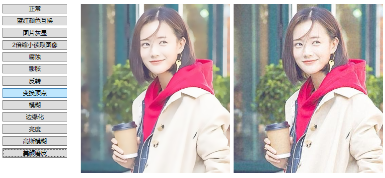

前言
在C#调用OpenCV其实非常简单，因为C#中有很多OPenCV的开源类库。
本文主要介绍在WPF项目中使用OpenCVSharp3-AnyCPU开源类库处理图片，下面我们先来做开发前的准备工作。
准备工作
首先，我们先创建一个WPF项目。
然后，在Nuget上搜索OpenCVSharp，如下图：
接着，我们选择OpenCVSharp3-AnyCPU选项进行安装 。
安装了OpenCVSharp3-AnyCPU后，我们的项目会自动引入4个类库，如下图：

到这里，我们的准备工作就完成了，非常简单。
C#中应用OPenCV
现在，我们进入项目，进行OPenCV的调用。
我们先引入OpenCV相关的命名空间，如下：
using OpenCvSharp;
using OpenCvSharp.Extensions;
然后我们在项目中使用Mat类来进行图片操作。
----------------------------------------------------------------------------------------------------
红蓝颜色通道互换
在OPenCV里，Mat类是非常重要的，它是处理图片的入口。
现在，我们先做一个简单的图片操作，红蓝通道颜色互换，代码如下：
Mat mat = new Mat(@"..\..\Images\ocv02.jpg", ImreadModes.Unchanged);
for (var y = 0; y < mat.Height; y++)
{
for (var x = 0; x < mat.Width; x++)
{
Vec3b color = mat.Get<Vec3b>(y, x);
var temp = color.Item0;
color.Item0 = color.Item2; //B 转 R
color.Item2 = temp; //R 转 B
mat.Set(y, x, color);
}
}
var mem = mat.ToMemoryStream();
BitmapImage bmp = new BitmapImage();
bmp.BeginInit();
bmp.StreamSource = mem;
bmp.EndInit();
imgOutput.Source = bmp;
mat.Dispose();/// 该方法在mat里被重写了，可以释放资源，可以放心调用
效果图如下：

可以看到，我们成功的处理了图片的红蓝通道颜色互换。
现在我们再多做一些OpenCV的操作。
腐蚀
代码如下：
using (var src = new Mat(@"..\..\Images\ocv02.jpg", ImreadModes.AnyDepth | ImreadModes.AnyColor))
{
Cv2.Erode(src, src, new Mat());
var mem = src.ToMemoryStream();
BitmapImage bmp = new BitmapImage();
bmp.BeginInit();
bmp.StreamSource = mem;
bmp.EndInit();
imgOutput.Source = bmp;
}
效果图如下：
反转
代码如下：
using (var src = new Mat(@"..\..\Images\ocv02.jpg", ImreadModes.AnyDepth | ImreadModes.AnyColor))
{
using (var dst = new Mat())//复制以后处理
{
Cv2.BitwiseNot(src, dst, new Mat());
var mem = dst.ToMemoryStream();
BitmapImage bmp = new BitmapImage();
bmp.BeginInit();
bmp.StreamSource = mem;
bmp.EndInit();
imgOutput.Source = bmp;
}
}
效果图如下：

亮度—变暗
代码如下：
BitmapImage bmpSource = new BitmapImage(new Uri("pack://application:,,,/images/ocv02.jpg" ));
Mat mat = bmpSource.ToMat();
for (var y = 0; y < mat.Height; y++)
{
for (var x = 0; x < mat.Width; x++)
{
Vec3b color = mat.Get<Vec3b>(y, x);
int item0 = color.Item0;
int item1 = color.Item1;
int item2 = color.Item2;
#region 变暗
item0 -= 60;
item1 -= 60;
item2 -= 60;
if (item0 < 0)
item0 = 0;
if (item1 < 0)
item1 = 0;
if (item2 < 0)
item2 = 0;
#endregion
#region 变亮
//item0 += 80;
//item1 += 80;
//item2 += 80;
//if (item0 > 255)
// item0 = 255;
//if (item1 > 255)
// item1 = 255;
//if (item2 > 255)
// item2 = 255;
#endregion
color.Item0 = (byte)item0;
color.Item1 = (byte)item1;
color.Item2 = (byte)item2;
mat.Set(y, x, color);
}
}
var mem = mat.ToMemoryStream();
BitmapImage bmp = new BitmapImage();
bmp.BeginInit();
bmp.StreamSource = mem;
bmp.EndInit();
imgOutput.Source = bmp;
mat.Dispose();/// 该方法在mat里被重写了，可以释放资源，可以放心调用
可以看到，这里的代码稍微有点特别。
我们通过BitmapImage导入图片后，直接使用BitmapImage的对象的ToMat方法，把BitmapImage转换成了Mat类的对象。
这个ToMat方法，我们需要特别留意一下，因为他并不是BitmapImage类的方法，它是一个扩展方法，只有我们引用了OpenCvSharp命名空间，BitmapImage和Bitmap对象才会增加扩展方法ToMat。
效果图如下：

顶点变化
代码如下:
using (var src = new Mat(@"..\..\Images\ocv02.jpg", ImreadModes.AnyDepth | ImreadModes.AnyColor))
{
using (var dst = new Mat())//复制以后处理
{
//设置原图变换顶点
List< Point2f> AffinePoints0 =new List<Point2f>() { new Point2f(100, 50), new Point2f(100, 390), new Point2f(600, 50) };
//设置目标图像变换顶点
List<Point2f> AffinePoints1 = new List<Point2f>() { new Point2f(200, 100), new Point2f(200, 330), new Point2f(500, 50) };
//计算变换矩阵
Mat Trans =Cv2.GetAffineTransform(AffinePoints0, AffinePoints1);
//矩阵仿射变换
Cv2.WarpAffine(src, dst, Trans,new OpenCvSharp.Size() { Height= src.Cols, Width= src.Rows });
var mem = dst.ToMemoryStream();
BitmapImage bmp = new BitmapImage();
bmp.BeginInit();
bmp.StreamSource = mem;
bmp.EndInit();
imgOutput.Source = bmp;
}
}
效果图如下：

美颜磨皮 双边滤波
代码如下：
using (var src = new Mat(@"..\..\Images\ocv02.jpg", ImreadModes.AnyDepth | ImreadModes.AnyColor))
{
using (var dst = new Mat())//复制以后处理
{
Cv2.BilateralFilter(src, dst, 15, 35d, 35d);
var mem = dst.ToMemoryStream();
BitmapImage bmp = new BitmapImage();
bmp.BeginInit();
bmp.StreamSource = mem;
bmp.EndInit();
imgOutput.Source = bmp;
}
}
效果图如下：

----------------------------------------------------------------------------------------------------
大家可以看到，图片中有很多OpenCV的特效处理，而文章中只是介绍了几个，这是因为其他处理和文章中的特效处理的方法大同小异，所以就只列举了这几个。
有兴趣的朋友可以自行下载代码学习。
----------------------------------------------------------------------------------------------------
到此C#调用OpenCV开发简易版美图工具就讲完了。
代码已经传到Github上了，欢迎大家下载。
Github地址：https://github.com/kiba518/WpfOpenCV
----------------------------------------------------------------------------------------------------
注：此文章为原创，任何形式的转载都请联系作者获得授权并注明出处！
若您觉得这篇文章还不错，请点击下方的【推荐】，非常感谢！
本文已独家授权给脚本之家（ID:jb51net）公众号发布！
https://www.cnblogs.com/kiba/p/11321438.html